개발기 축 위의 「밀어서 보기」 칩이 background: var(--accent) 다.
--accent 는 낮에 짙은 갈색(#8a6a3c)이고 밤에 밝은
베이지(#c9a87a)라, 같은 선언인데 밤에만 밝기가 뒤집혀 어두운 화면에서 혼자 뜬다.
accent 로 채우고 글자는 카드색.
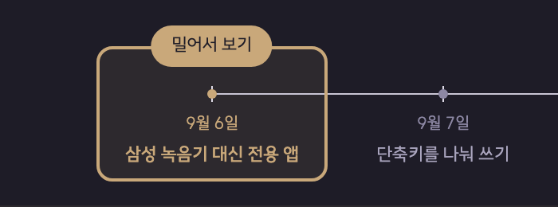
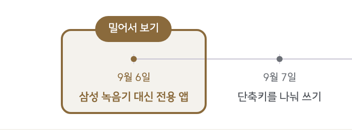
밤에 화면에서 가장 밝은 덩이가 된다. 정작 읽을 것은 그 아래 칸인데 눈이 칩으로 먼저 간다.
카드색으로 채우고 accent 테두리와 글자.
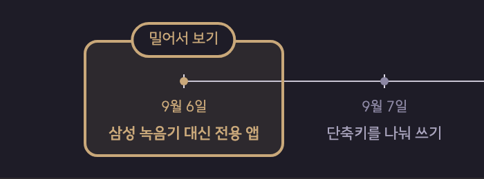
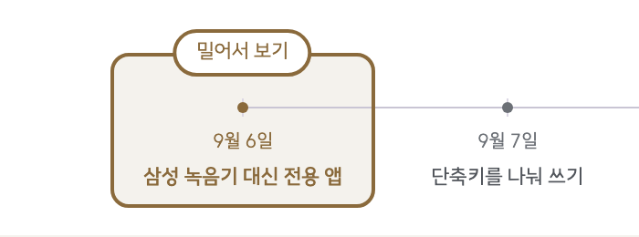
창 테두리와 같은 두께·같은 색이라 칩이 창에 달린 이름표로 읽힌다. 두 판 모두 밝기가 안 튄다.
accent 를 14% 섞은 카드색, 글자는 accent.
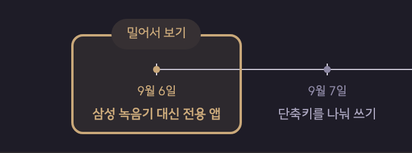
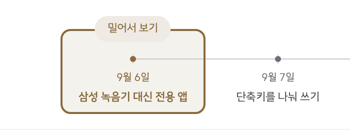
밤은 좋은데 낮에서 창 바탕(accent 9%)과 칩(14%)의 차이가 5%뿐이라 칩의 윤곽이 흐려진다.
페이지 바탕으로 채우고 글자는 accent.
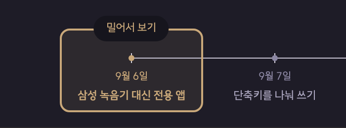
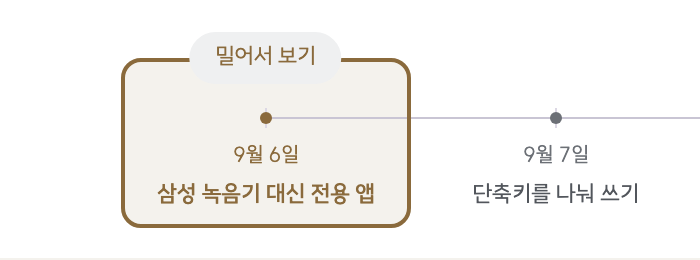
밤은 C 와 비슷하게 좋다. 낮에서는 C 와 거의 구분이 안 된다 — 페이지 바탕과 창 바탕이 둘 다 옅어 어느 쪽으로 채워도 칩 윤곽이 흐리다.
칩은 --accent 로 채우고 --card 로 글자를 쓴다. 두 토큰 모두
판에 따라 값이 갈리는데, 서로 반대 방향으로 갈린다. 낮에는 어두운 바탕에 밝은 글자,
밤에는 밝은 바탕에 어두운 글자가 된다.
| 판 | --accent 바탕 | --card 글자 | 결과 |
|---|---|---|---|
| 낮 | #8a6a3c 짙은 갈색 | #ffffff 흰색 | 어두운 바탕 · 밝은 글자 |
| 밤 | #c9a87a 밝은 베이지 | #1e1c27 먹색 | 밝은 바탕 · 어두운 글자 |
나머지 화면은 밤에 전부 어두워지는데 이 칩만 반대로 간다. 그래서 개발기를 밤에 열면 축 위 칩이 가장 먼저 눈에 든다.
.tml-win .chip {
/* 창 테두리와 같은 선이 칩까지 이어진다 —
채우지 않으므로 밤에 혼자 밝아지지 않는다 */
background: var(--card);
color: var(--accent);
border: 2px solid var(--accent);
/* 테두리 두께만큼 안쪽 여백을 덜어 칩 크기를 지금 그대로 둔다 */
padding: calc(0.34rem - 2px) calc(0.8rem - 2px);
}light-dark() 가 필요 없다.
2px solid var(--accent) 라 두께와 색이 그대로 이어진다.
개발기 열네 편 전부. Timeline 컴포넌트가 창을 그릴 때마다 하나씩 붙으므로
한 군데를 고치면 열네 편이 함께 바뀐다.
소개 · 왜 만들었나 · 개발기를 넘기는 탭에서 골라진 알약이
--chip-on 을 쓰는데, 밤 값이 rgba(255,255,255,0.92) 라
거의 흰색이었다. 맥 세그먼트 컨트롤을 본뜬 자리인데, 정작 맥은 어두운 판에서
흰 알약을 쓰지 않는다 — 트랙보다 한 단 밝기만 하고 글자는 밝은 쪽이다.
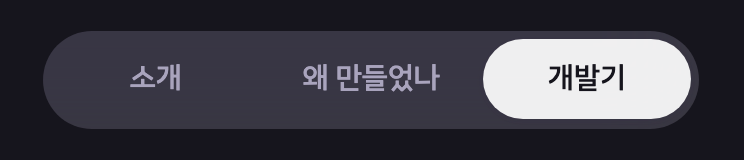
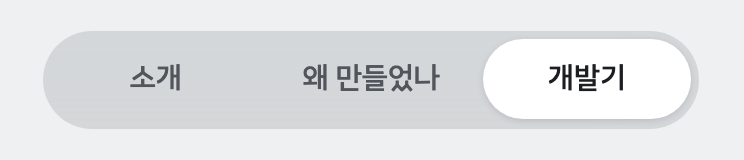
골라진 칸만 화면에서 가장 밝다. 지금 보는 쪽보다 알약이 먼저 읽힌다.
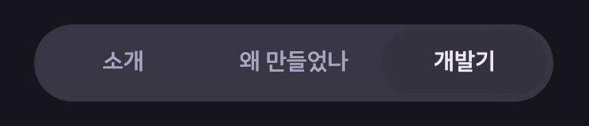
안 튀지만 알약과 트랙이 잘 안 갈린다. 어느 쪽이 골라진 것인지 한 번 더 봐야 한다.
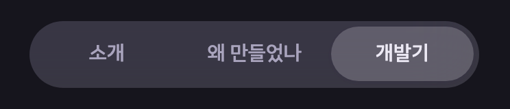
트랙보다 확실히 밝으면서 흰색처럼 튀지 않는다. 낮 판은 흰 알약 그대로 둔다.
/* 밤에도 트랙보다 한 단 밝기만 하고 하얗게 가지 않는다 */
--chip-on: light-dark(var(--card), rgba(236, 233, 244, 0.22));
/* 알약이 판을 따라 밝고 어두워지므로 글자는 그냥 본문 색을 쓴다 */
--chip-on-ink: var(--ink);| 판 | 알약 | 글자 | 크기 |
|---|---|---|---|
| 낮 · 전 | rgb(255, 255, 255) | rgb(28, 30, 33) | 104×40 |
| 낮 · 후 | rgb(255, 255, 255) | rgb(28, 30, 33) | 104×40 |
| 밤 · 전 | rgba(255, 255, 255, 0.92) | rgb(22, 21, 29) | 104×40 |
| 밤 · 후 | rgba(236, 233, 244, 0.22) | rgb(236, 233, 244) | 104×40 |
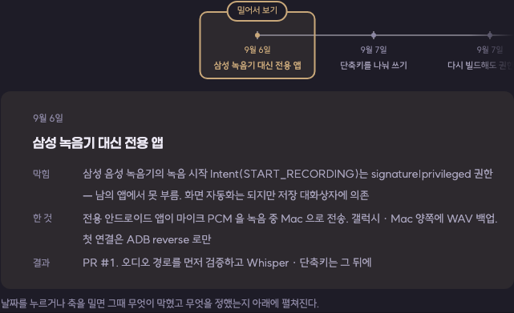
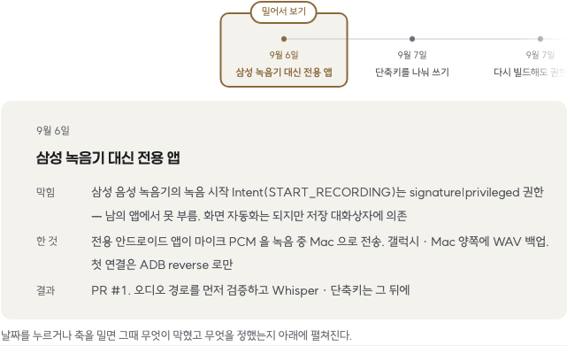
쉰두 쪽을 밤 판으로 훑어 「바탕이 밝고 글자가 어두운」 덩이를 전부 뽑았다. 칩과 탭을 고치고 나니 여덟 종류가 남는데, 성격이 둘로 갈린다.
| 무엇 | 몇 곳 | 성격 |
|---|---|---|
.mrk-note i 번호 동그라미 | 33 | 사이트 UI |
.reel 라벨 | 7 | 사이트 UI |
.cap.rec/run/ok/none | 4 | 앱 화면 흉내 |
.s.key · .mjb-t.on | 2 | 앱 화면 흉내 |
아래쪽 여섯은 그 앱이 실제로 그렇게 생긴 것을 다시 그린 자리라 밝은 게 맞다. 위 둘은 사이트가 얹는 표시인데, 지름 24px 짜리 번호 동그라미라 칩(75×26)이나 알약(104×40)처럼 크게 튀지는 않는다. 작은 번호는 채우는 편이 읽기 쉽기도 하다.
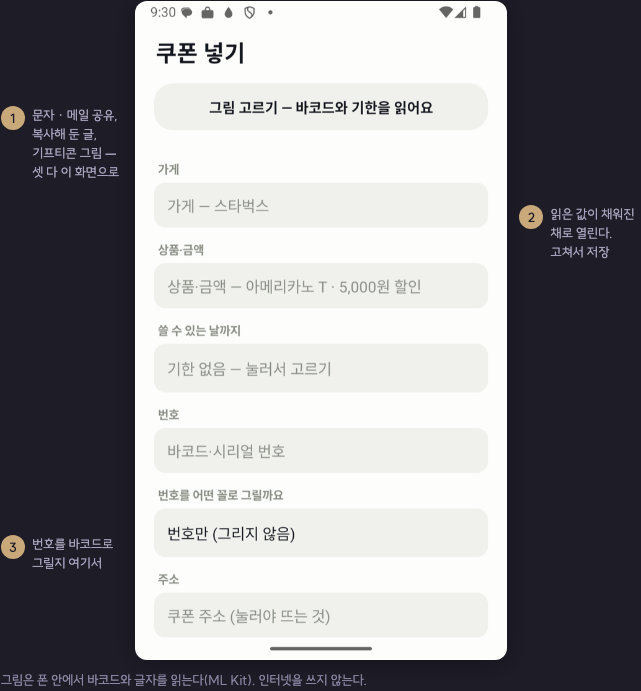